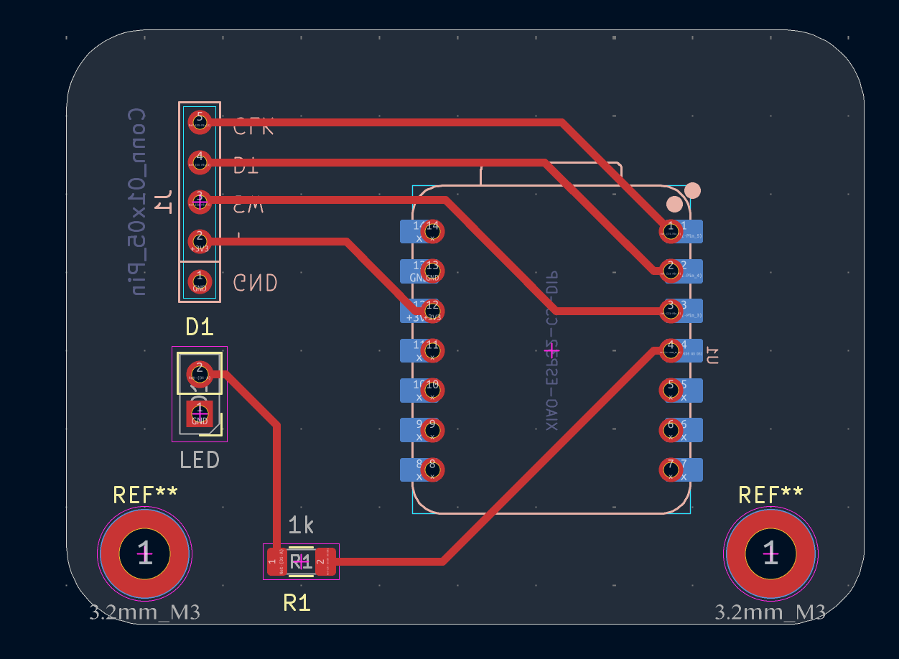
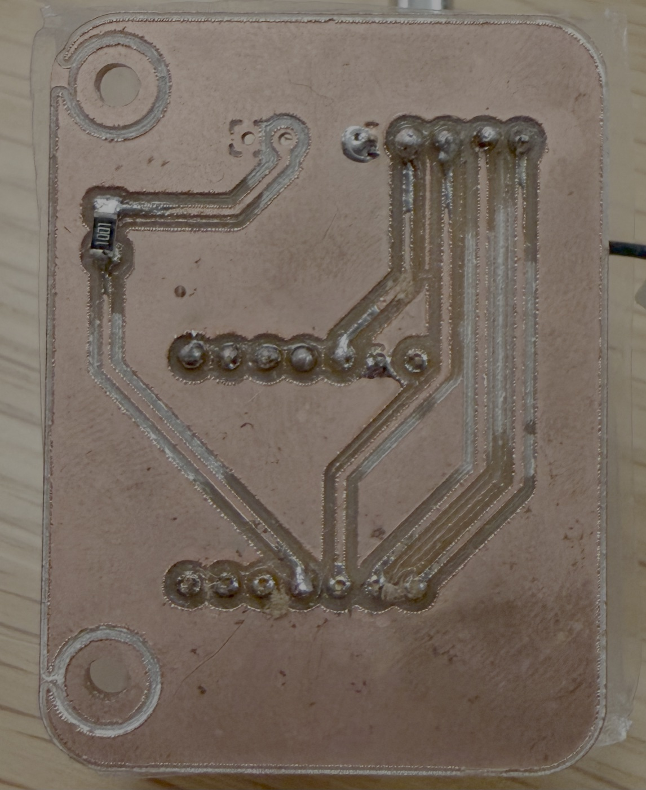
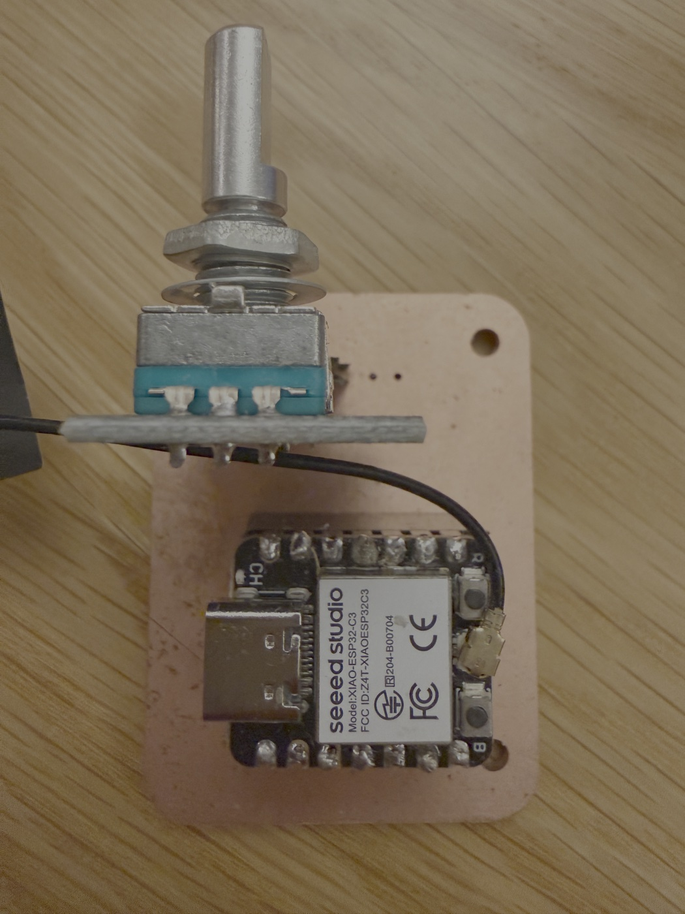
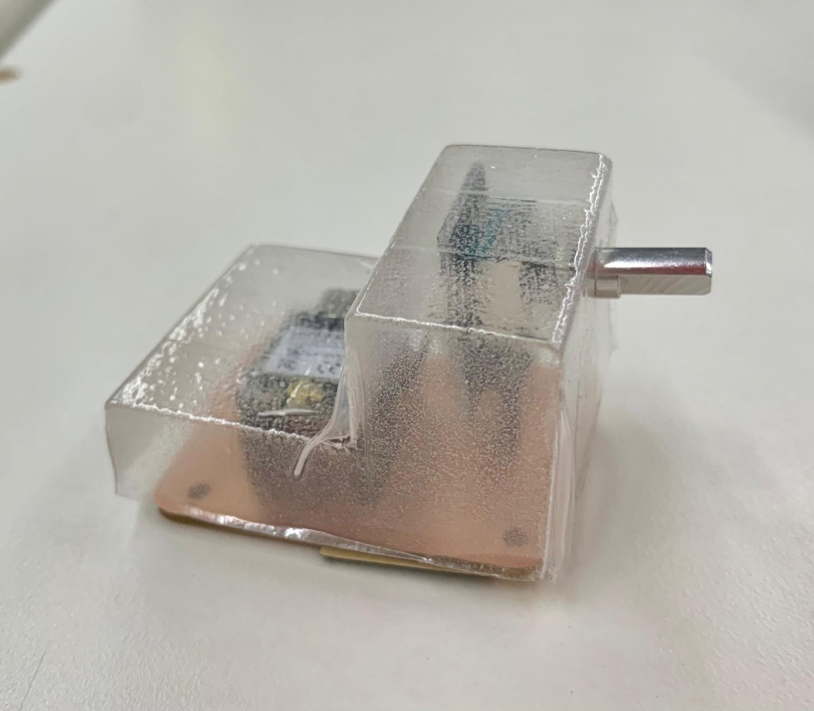
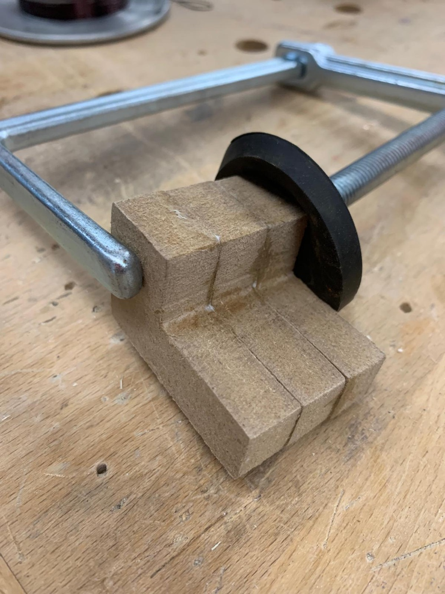
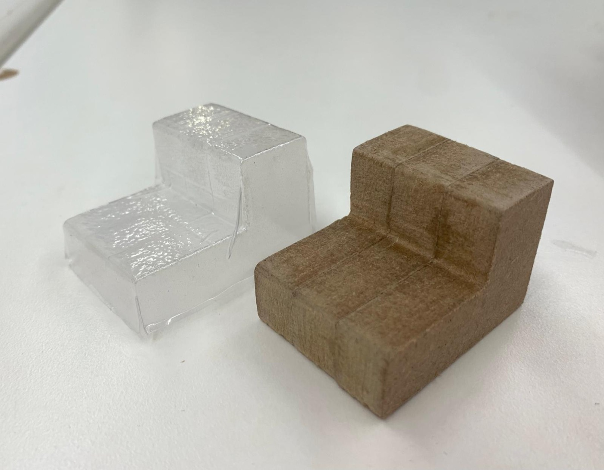
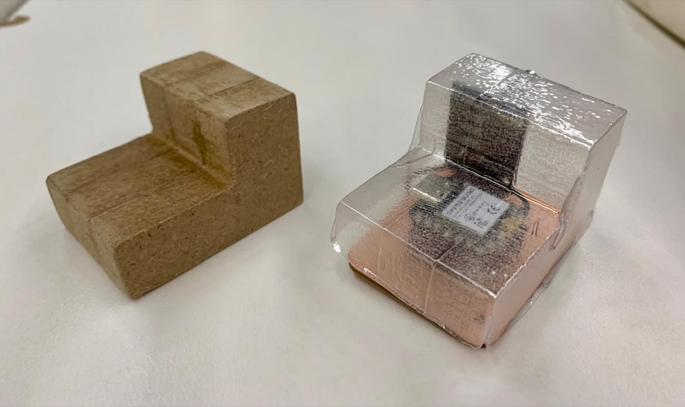

This is an enhancement on the previous PCB design from Victor's workshop. Critically, it reflects the ESP32 component. We didn't previously mirror it, so when attaching the PCB it had the opposite traces. This turned out to be a great thing — it gave me more reps in KiCad, a solid understanding of common problems in PCB design, and a lot of reps on soldering. Tiny little surface, on tiny little mount, little component, soldering. 🫠 And board milling.
On milling, I encountered a lot of issues in use of the machine. Prematurely opening it within the 5 second window requiring a restart, the restart recalibrating, this happening between my front copper and drill holes — me needing to start over again. Ultimately a good thing because I learned a lot about the process.



Gurmani and I decided to team up to use the rotary encoder as a waterproof remote control for some future device we'll do in the networking project. She designed an enclosure for the mill and the idea was to vacuum seal a plastic mold for it.
Mill multiple thin MDF layers separately, laminate them together to reach full height. No endmill depth problem, no structural risk. Sand smooth, chamfer edges lightly with a chisel, vacuum form PETG over the positive. Done.
She documented this in great detail.



Laminating the MDF positive; the finished positive with the empty shell; the shell fitted over the board
We'll be using this in something very interesting in our networking project... 🕹️ 🐉 💨